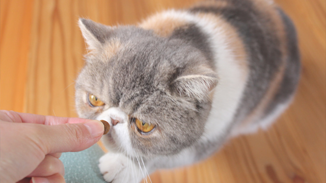
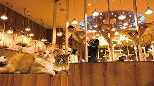
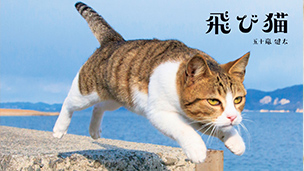
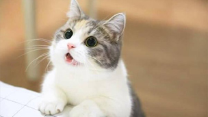
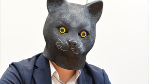
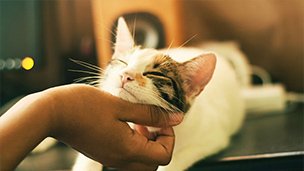
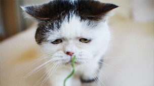

Pick up
野十郎さんのお食事事情。
2014年5月21日
野十郎さんのゴハンは、朝にはカリカリにお肉（赤身やササミ）を混ぜたもの。昼は自分でお皿に
あるものを好きな時間に。夕方１８時にオヤツ（シーバなど）夜にはまたカリカリにしたお肉。
飼育員さん
ごとうさん
好きな猫種はアメリカンショートヘア。マンチカンも捨てがたい。
ふじさわさん
好きな猫種はエキゾチックショートヘア。野十郎がお気に入り。

たぶん、猫は地球を救う。おしゃれすぎる猫カフェで癒やされよう。
2017年2月18日

『飛び猫』で有名な猫の島、佐柳島へ行ってきた。
2018年4月30日

そのおしごとは猫でもできますか？
2019年4月16日

「猫」に「武装」！ ニャンとも不思議な「ねこホビー」誕生秘話
2018年10月10日

猫になりた〜い〜 君の腕の中〜♪
1994年7月20日

まこという名の不思議顔の猫まこという名の不思議顔の猫まこという名の不思議顔の猫まこという名の不思議顔の猫まこという名の不思議顔の猫まこという名の不思議顔の猫まこという名の不思議顔の猫まこという名の不思議顔の猫まこという名の不思議顔の猫まこという名の不思議顔の猫まこという名の不思議顔の猫まこという名の不思議顔の猫まこという名の不思議顔の猫まこという名の不思議顔の猫まこという名の不思議顔の猫まこという名の不思議顔の猫まこという名の不思議顔の猫まこという名の不思議顔の猫まこという名の不思議顔の猫まこという名の不思議顔の猫まこという名の不思議顔の猫
2019年4月16日
記事は全件表示